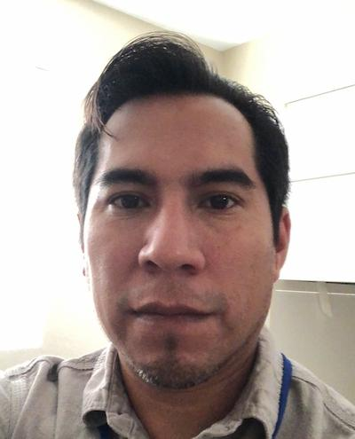

Ricardo Mendoza Ramos | WDD 130
Hello! My name is Ricardo Mendoza Ramos, and I enjoy visiting new places as well as spending time with friends and family. I was born and raised in Mexico, and when I was a kid we would take trips to Mexico City to visit family. I guess this is where I developed my love to visiting new places. My love for food must also come from when I traveled with my parents, and even though some of the things I like may seem pretty common, I enjoy them a lot. I like tacos, tamales, tostadas, sopes, enchiladas, tlacoyos, and many other wonderful mexican dishes. From the places I visit a love the colonial and pre-hispanic architecture. The construction is amazing and it was made to last. I can only imagine how much effort it would take to build some of these great structures, but it is exactly what makes visiting these places a must. However, I don't enjoy going to these places alone. One of the greatest things is to be able to share these moments and experiences with the people you love. I can't wait to go somewhere amazing and get to share it with my family. I am looking forward to this course.